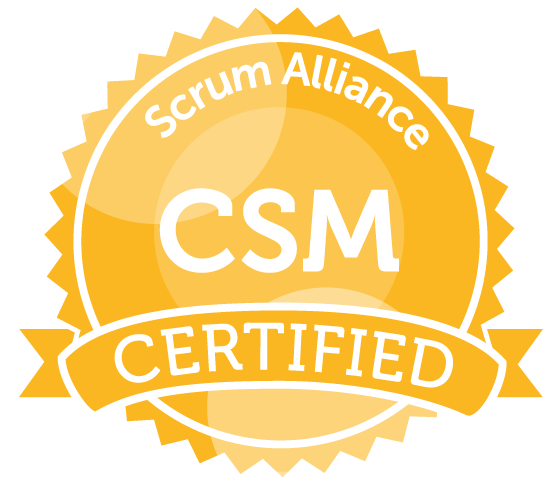

I am a Certified ScrumMaster through Scrum Alliance. I have actively maintained my certification since January 2017. The process included an initial week-long course and exam, as well as ongoing training and renewal every two years.
As a CSM, I bring years of Scrum implementation and team facilitation experience to my projects. My goal is to make Agile teams work better together, while continuing to improve my own leadership and communication skills.
“The Scrum Master, the person in charge of running the process, asks each team member three questions: 1. What did you do yesterday to help the team finish the Sprint? 2. What will you do today to help the team finish the Sprint? 3. What obstacles are getting in the team’s way? That’s it. That’s the whole meeting.”
― Jeff Sutherland, Scrum: The Art of Doing Twice the Work in Half the Time

I am a 2015 Graduate of Master's of Geospatial Information Science & Technology (MGIST) Program at North Carolina State University (NCSU). The MGST is one of several programs nurtured by the interdisciplinary Center for Geospatial Analytics, housed within the College of Natural Resources (CNR).
The MGIST Program encompasses a variety of geospatial approaches and perspectives to address location based problems, because "Location Matters."
Throughout my coursework, I was exposed to a number of analytical and visualization techniques across a variety of fields, allowing me to broaden both the breadth and depth of my understanding of geospatial. My time at NCSU prepared me for an enriching career in the geospatial sciences.

Sorry State fans, but I'm a Tar Heel born and a Tar Heel bred. I completed my undergraduate degree in Anthropology and Archaeology at The University of North Carolina at Chapel Hill in 2013.
After participating in an archaeological field school for a semester on the coast of Peru, I continued an independent study at the UNC Research Laboratories of Archaelogy.
One class about this thing called "GIS," and I was hooked!